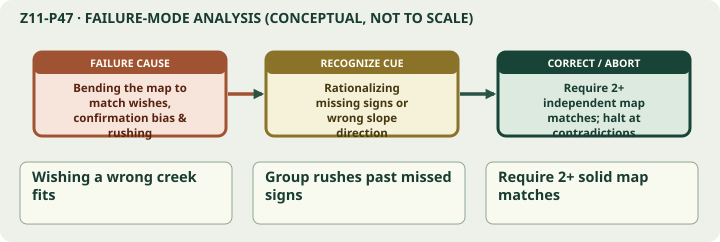

Z11-P47 · Navigation, weather and rescue · Adapted historical material
Diagnose common navigation errors: bending the map, confirmation bias and drift
Catch the psychological traps that make experienced travelers rationalize away clear evidence that they are off-route.
When it applies · Every backcountry trip, especially when tired, rushed, cold or eager to reach camp before dark.
Equipment · Oriented map, watch and honest devil's-advocate check among companions.

Actions
- Watch for "bending the map"—mentally forcing mismatched real landmarks to fit where you WISH you were on the map (e.g., calling a creek a mapped river or ignoring a missing ridge).[N03, N09, ED]
- Watch for confirmation bias and groupthink: accepting one confident speaker's guess without asking for two independent supporting features, or walking faster when uneasy instead of stopping to check.[E11, N09, ED]
- Require at least two independent map-to-ground confirmations (e.g., stream flow direction PLUS trail bearing PLUS contour slope) before declaring a suspected position verified.[N03, N08, ED]
Failure recognition · Rationalizing away three missing trail signs and an uphill slope that should be downhill until nightfall catches the party miles off-route.[N09, T06]
Verify · Ask one companion to argue honestly against your current position assumption—if the map cannot answer their objections cleanly, stop and relocate.[N09, E11, ED]
Stop or change course · Two unexplained map-to-ground contradictions equal position uncertainty—halt immediately and follow the STOP relocation protocol.[N09, T06]
Evidence and editorial notes
- E11 · NPS · Hike Smart (current web edition)
- Section: Plan your hike; Stay together · Conditions: Groups on hiking routes
Support: Choose a route suited to the group's abilities and hike at a pace that keeps the group together.
Limitations: Fast hikers moving ahead at junctions is a leading driver of preventable separation. · Conflicting evidence: None; aligns with SAR prevention principles.
Editorial note: Core reference for group accountability and pacing cards. · Specialist reviewer: Group leaders and search and rescue
Primary source · checked 2026-11-24 - N03 · USGS · What is a Topographic Map (current web edition)
- Section: What is a Topographic Map > Contours and Relief · Conditions: Matching three-dimensional terrain shapes to two-dimensional contour lines
Support: Closed contour rings denote peaks or depressions (hachured), V-patterns point uphill in valleys/drainages and wide spacing marks gentle slopes while tight spacing marks cliffs or steep grades.
Limitations: Dense forest canopy or snow drifts can obscure subtle terrain features shown on the map. · Conflicting evidence: None; core topographic terrain-association evidence.
Editorial note: Supports ridge, valley, saddle and handrail terrain-interpretation cards. · Specialist reviewer: Navigation and cartography
Primary source · checked 2026-11-24
Current assessment · A04-N03 (2026-11-25) · Open: support partial or missing (A04): Contours and depression symbols supported. The broad V/uphill and cliff inference depend on drawing context and saddle/ridge distinction; require dedicated examples. Limits: Specialist review PENDING (Navigation and cartography); publication HOLD. All release decisions pending. - N08 · NOAA NCEI · Magnetic Declination (current web edition)
- Section: NOAA Magnetic Declination > definition and true-bearing conversion · Conditions: Using magnetic baseplate compasses near metal, electronics or iron-rich rock
Support: Declination is between true and magnetic north and varies by location and time. Grid convergence is separate. A device may already apply a correction.
Limitations: NOAA definition does not establish site-specific interference distances or diagnosis of magnetic anomalies. · Conflicting evidence: Aligns with B014-P13 and B014-P14.
Editorial note: Grounds declination conversion, metal-clearance and magnetic-anomaly cards. · Specialist reviewer: Navigation and geophysics safety
Primary source · checked 2026-11-24 - N09 · NPS · Outdoor Emergency Plan (current web edition)
- Section: If You Get Lost; Seek help · Conditions: Lost hiker who cannot safely retrace steps and has sought rescue
Support: Report last known location and landmarks. Stay put while awaiting help unless an immediate threat requires getting to safety.
Limitations: Navigation, signaling method and safe movement depend on site and responder instructions. · Conflicting evidence: See A02 claim audit for boundaries.
Editorial note: Core evidence for lost-person psychology, signaling and SAR coordination cards. · Specialist reviewer: Search and rescue
Primary source · checked 2026-11-24 - T06 · NPS · Outdoor Emergency Plan (current web edition)
- Section: If you get lost or hurt; call for help · Conditions: Outdoor US emergency
Support: Communicate location, last known point, situation and needs. Stay put when unable to establish a safe route unless immediate danger requires movement.
Limitations: Cell signal is unreliable in backcountry terrain; pre-trip plans bridge communication gaps. · Conflicting evidence: None; core lost-person decision rule.
Editorial note: Foundation for stay/signal/move and dispatch handoff cards. · Specialist reviewer: Search and rescue
Primary source · checked 2026-11-24
Source lineage · B014-P19 and SAR human factors; new manuscript · Classification · Adapted historical material.